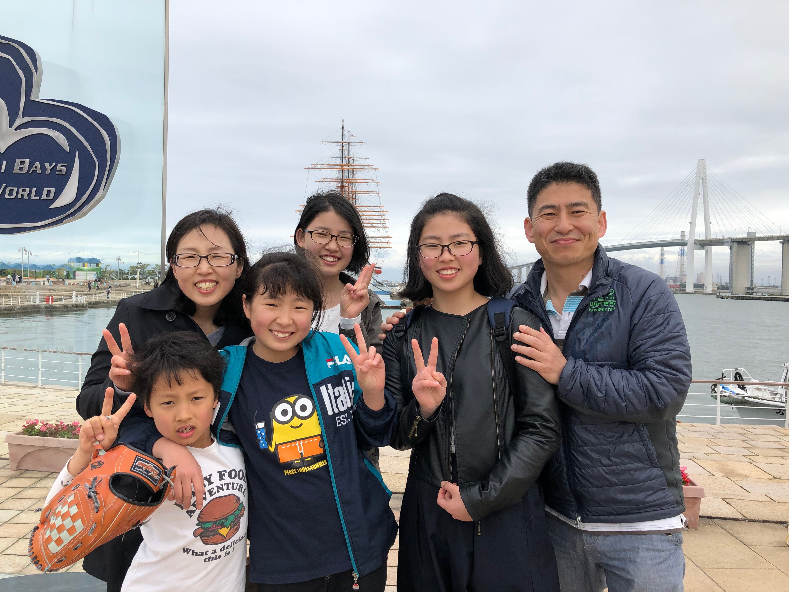

となみ野聖書教会は2012年に普通の民家を使った「家の教会」としてスタートしました。十字架で死に、三日目によみがえられたイエス・キリストを救い主と信じ、神が与えてくださった聖書を共に学び、唯一の真の神を心から賛美し礼拝する...そこに本当の喜びと平安があります。
イエス・キリストの愛のうちに歩むことの一つとして、教会の社会貢献という役目を大切にしています。その一環として、子どものための英語クラスを開いています。現在、50人くらい子どもたちがそれぞれの英語クラスに参加しています。
そして、今まで共に働いてきた横山幹雄牧師の引退とともに、第二の飛躍として新しい会堂を探しています。その間は公共施設を借りて礼拝します（2019年12月から）。イエス・キリストにまた教会に興味ある方々はご連絡お願いします。
牧師ベック・サイモンより
